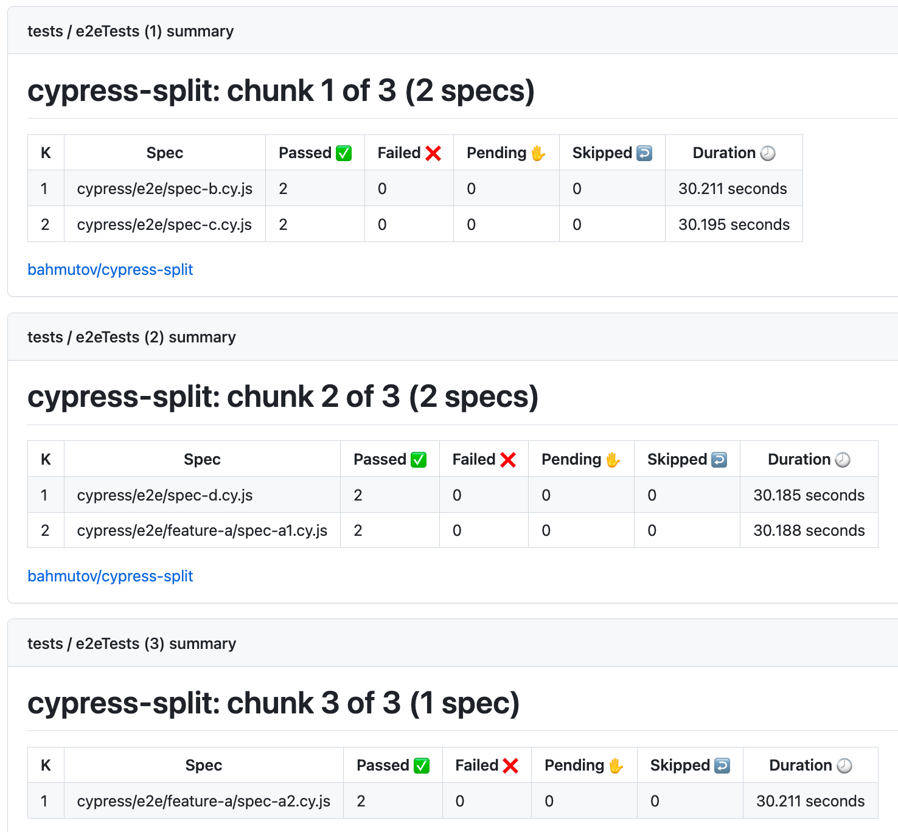

How to run Cypress tests by making a pull request comment.
Imagine you have a lot of Cypress tests. Which ones would you run when opening a GitHub pull request? Of course, if you can, you should run all of them. But what if there are too many specs to run, even in parallel using cypress-split? You would probably run tests filtered by the test tags using my plugin @bahmutov/cy-grep. But how would you specify which tests to run for a pull request? In my previous blog post I showed how to Pick Tests To Run Using The Pull Request Text. In this blog post I will show a more flexible approach that uses GitHub pull request comments to trigger test run.
$ npx cypress run --env grepTags=@sanity Couldn't find tsconfig.json. tsconfig-paths will be skipped cy-grep: filtering using tag(s) "@sanity" cy-grep: will omit filtered tests
I will bring a GitHub Actions from the blog post Run And Trigger GitHub Workflow, but I will only trigger it manually or via repository dispatch events. There are two jobs: one to collect and merge the input parameters, and the second to actually run the tests using my reusable workflow from bahmutov/cypress-workflows.
# default values to use env: tags:''# grep tags machines:1# split run across N machines
# run the workflow for different events # - when we trigger the workflow manually # - when we dispatch an event on: workflow_dispatch: inputs: machines: description:Numberofmachines type:number default:1 required:false tags: description:Testtagstofilter type:string default:'' required:false repository_dispatch: types: [on-ci] jobs: # collect the variables and parameters into # tags and number of machines prepare: runs-on:ubuntu-20.04 outputs: tags:${{steps.variables.outputs.tags}} machines:${{steps.variables.outputs.machines}} steps: -name:Mergevariables id:variables run:| echo "tags=${{ github.event.inputs.tags || github.event.client_payload.tags || env.tags }}" >> "$GITHUB_OUTPUT" echo "machines=${{ github.event.inputs.machines || github.event.client_payload.machines || env.machines }}" >> "$GITHUB_OUTPUT" -name:Printthemergedvariables run:| echo "test tags ${{ steps.variables.outputs.tags }}" echo "number of machines ${{ steps.variables.outputs.machines }}" tests: needs:prepare # https://github.com/bahmutov/cypress-workflows uses:bahmutov/cypress-workflows/.github/workflows/split.yml@v2 with: # tip: need to pass the number of machines as a number, and not as a string nE2E:${{fromJson(needs.prepare.outputs.machines)}} env:grepTags=${{needs.prepare.outputs.tags}}
Trigger workflow from GitHub
Let's run the sanity tests. We can trigger the tests manually
We see the entire workflow created automatically by the reusable workflow "split"
Let's inspect the merged variables. We entered the @sanity tag, and the default number of machines is 1
The tag is passed to Cypress and only 3 tests are set to run
Perfect.
Trigger workflow using curl
Let's run all specs by splitting them across 3 machines. We can trigger the run by dispatching an event using curl.
The workflow shows 3 containers running in parallel
The plugin cypress-split outputs GitHub Actions summary for each machine. You can see how different specs ran across each machine.

The slash command
Ok, now let's have some fun. I will use peter-evans/slash-command-dispatch to implement listening to the pull request comments and automatically running E2E tests. I will add two workflow files: one to listen to the new comments and dispatch command events, and another to actually run the tests.
name:SlashCommandDispatch on: issue_comment: types: [created] jobs: slash_command_dispatch: runs-on:ubuntu-20.04 steps: # https://github.com/peter-evans/slash-command-dispatch -name:SlashCommandDispatch uses:peter-evans/slash-command-dispatch@v3 with: token:${{secrets.GH_PERSONAL_TOKEN}} reaction-token:${{secrets.GH_PERSONAL_TOKEN}} dispatch-type:workflow static-args:| repository=${{ github.repository }} comment-id=${{ github.event.comment.id }} # we only have a single "/cypress" command in this repo commands:| cypress
I picked the dispatch-type: workflow to make it simpler and look similar to the existing cy.yml workflow we have seen before. All we need are two more parameters to be able to "report" back on the comment. Since our command is cypress in the above list, I name the actual test workflow cypress-command.yml
# default values to use env: tags:''# grep tags machines:1# split run across N machines
# run the workflow for different events # - when we trigger the workflow manually # - when we dispatch an event on: workflow_dispatch: inputs: machines: description:Numberofmachines type:number default:1 required:false tags: description:Testtagstofilter type:string default:'' required:false repository: description:'The repository from which the slash command was dispatched' required:true comment-id: description:'The comment-id of the slash command' required:true jobs: # collect the variables and parameters into # tags and number of machines prepare: runs-on:ubuntu-20.04 outputs: tags:${{steps.variables.outputs.tags}} machines:${{steps.variables.outputs.machines}} steps: -name:Mergevariables id:variables run:| echo "tags=${{ github.event.inputs.tags || env.tags }}" >> "$GITHUB_OUTPUT" echo "machines=${{ github.event.inputs.machines || env.machines }}" >> "$GITHUB_OUTPUT" -name:Printthemergedvariables run:| echo "test tags ${{ steps.variables.outputs.tags }}" echo "number of machines ${{ steps.variables.outputs.machines }}" tests: needs:prepare # https://github.com/bahmutov/cypress-workflows uses:bahmutov/cypress-workflows/.github/workflows/split.yml@v2 with: # tip: need to pass the number of machines as a number, and not as a string nE2E:${{fromJson(needs.prepare.outputs.machines)}} env:grepTags=${{needs.prepare.outputs.tags}}
Run feature tests
Let's open a pull request PR 7. We think we have changed something related to the feature B. Let's run the tests for that feature using 1 machine. I will comment /cypress tags=@featureB
Two workflows run in response to the comment. The dispatch looks at the /cypress part of the comment and triggers the cypress-command.yml workflow, passing the parameter tags=...
The workflows even post a reaction emoji on my comment!
Run sanity tests across N machines
Maybe we want to run the sanity tests, we know there are 3 of them. Let's run them across 3 machines.
The specs ran across 3 machines
Avoid using @ tags in the comment
We are using test tags that start with the character @ - it is purely a convention. There is no special meaning to this character in the cy-grep plugin. But there is a special meaning for GitHub, which is why it highlights the tags in bold. Let's update our @bahmutov/cy-grep settings in cypress.config.js to automatically enforce @ at the start of the tag. This way we don't have to use @ character in our GitHub comment.
Now we can type tags without @ and they would work just as well. Let's run tests for features B and C across two machines.
The tags and the machines are passed to the dispatched workflow
The two specs were executed in parallel on two machines
Comment back
We can post meaningful content back to update the original /cypress ... comment with results of the test run. Using peter-evans/create-or-update-comment lets simply post back the received parameters. See the last job comment in the workflow below
# default values to use env: tags:''# grep tags machines:1# split run across N machines
# run the workflow for different events # - when we trigger the workflow manually # - when we dispatch an event on: workflow_dispatch: inputs: machines: description:Numberofmachines type:number default:1 required:false tags: description:Testtagstofilter type:string default:'' required:false # information about the comment that triggered this workflow repository: description:'The repository from which the slash command was dispatched' required:true comment-id: description:'The comment-id of the slash command' required:true jobs: # collect the variables and parameters into # tags and number of machines prepare: runs-on:ubuntu-20.04 outputs: tags:${{steps.variables.outputs.tags}} machines:${{steps.variables.outputs.machines}} steps: -name:Mergevariables id:variables run:| echo "tags=${{ github.event.inputs.tags || env.tags }}" >> "$GITHUB_OUTPUT" echo "machines=${{ github.event.inputs.machines || env.machines }}" >> "$GITHUB_OUTPUT" -name:Printthemergedvariables run:| echo "test tags ${{ steps.variables.outputs.tags }}" echo "number of machines ${{ steps.variables.outputs.machines }}" tests: needs:prepare # https://github.com/bahmutov/cypress-workflows uses:bahmutov/cypress-workflows/.github/workflows/split.yml@v2 with: # tip: need to pass the number of machines as a number, and not as a string nE2E:${{fromJson(needs.prepare.outputs.machines)}} env:grepTags=${{needs.prepare.outputs.tags}}
It would be cool if the split workflow produced the total number of passing / failed / skipped tests and a summary were posted into the comment.
Run workflow on the right branch
There is one important detail that we skipped. Let's say we created a new branch example-branch-1 and opened a pull request to merge our code into the main branch. We comment in the pull request (in this case it is pull request number 15). Let's say we want to run sanity tests for the feature A
The only information GitHub passes in the comment event to our dispatch code is the pull request number 15. Luckily we can determine the branch name by calling GitHub API, see my action bahmutov/get-branch-name-by-pr that I forked and updated from andrevalentin/get-branch-name-by-pr.
# we only know the pull request number, like 12, 20, etc # but to trigger the workflow we need the branch name # https://github.com/bahmutov/get-branch-name-by-pr -name:FindthePRbranchname🔠uses:bahmutov/get-branch-name-by-pr@v1 id:pr with: repo-token:${{secrets.GH_PERSONAL_TOKEN}} pr-id:${{github.event.issue.number}}
# https://github.com/peter-evans/slash-command-dispatch -name:SlashCommandDispatch uses:peter-evans/slash-command-dispatch@v3 with: token:${{secrets.GH_PERSONAL_TOKEN}} reaction-token:${{secrets.GH_PERSONAL_TOKEN}} dispatch-type:workflow static-args:| ref=${{ steps.pr.outputs.branch }} repository=${{ github.repository }} comment-id=${{ github.event.comment.id }} # we only have a single "/cypress" command in this repo commands:| cypress
We see the correct branch name when calling the manual workflow via ref parameter.
Because we use the dispatch-type: workflow option, use the workflow runs on branch example-branch-1 and tests the latest commit for that branch
Super.
Update 1: Switch branch using repository_dispatch
If you want to use repository_dispatch event from the slash command, you can pass the name of the current branch. Here is the slash command workflow:
# note: the token SLASH_COMMAND_GH_TOKEN # is classic GH token because could not get # the workflows dispatched using the new ones
# we only know the pull request number, like 12, 20, etc # but to trigger the workflow we need the branch name # https://github.com/bahmutov/get-branch-name-by-pr -name:FindthePRbranchname🔠uses:bahmutov/get-branch-name-by-pr@v1 id:pr with: repo-token:${{secrets.SLASH_COMMAND_GH_TOKEN}} pr-id:${{github.event.issue.number}}
# https://github.com/peter-evans/slash-command-dispatch -name:SlashCommandDispatch uses:peter-evans/slash-command-dispatch@v3 with: token:${{secrets.SLASH_COMMAND_GH_TOKEN}} reaction-token:${{secrets.SLASH_COMMAND_GH_TOKEN}} static-args:| ref=${{ steps.pr.outputs.branch }} repository=${{ github.repository }} comment-id=${{ github.event.comment.id }} # we only have a single "/cypress" command in this repo commands:| cypress
Here is the workflow file that prints the slash inputs and switches to the right branch to show differences between the main and the current branches.